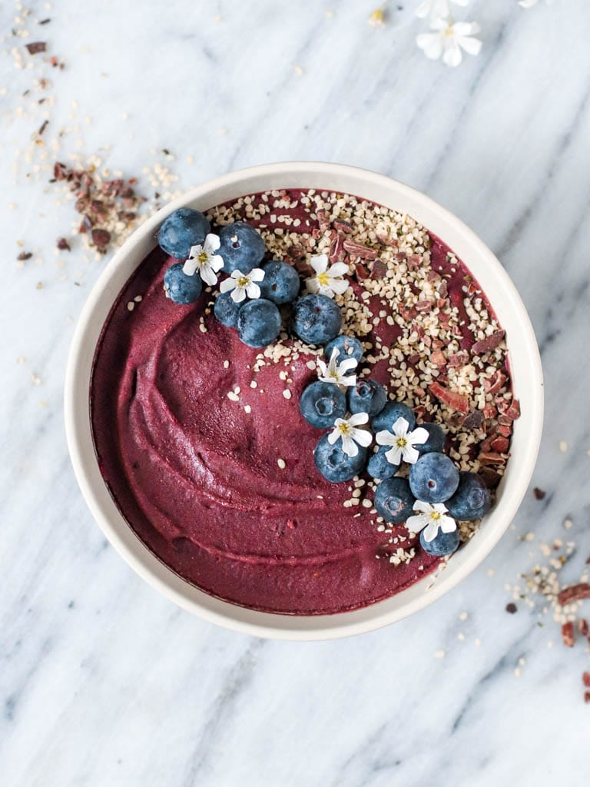

Berry Acai Bowl

The most simple and protein packed acai bowl recipe you can have on hand. This Acai bowl requires only 5 ingredients and is incredibly easy to whip up any morning.A vegan, gluten-free and 5-ingredient berry protein Acai Bowl packed with protein and antioxidants.
Ingredients:
- 1 Acai pupl packet
- 1/2 cup Mixed frozen berries
- 1 Frozen or fresh bananas
- 1/4 cup Plant-based milk
- 1/2 scoop Protein Powder
Steps:
- Add Acai and Frozen Berries to mixer
first and blend.
- Next add in the rest of the ingredients
including the fresh banana, hemp milk, and
protein powder. If you are using any
adaptogens, you can also add those in at
this time.
- Blend until well mixed, then top with your
favorite ingredients and enjoy!
- For toppings, use dried mulberries,
hemp seeds, flax seed, chia seeds, coconut
shreds, almond butter, fresh blueberries,
cacao nibs, banana slices, and bee pollen to
name a few you can try